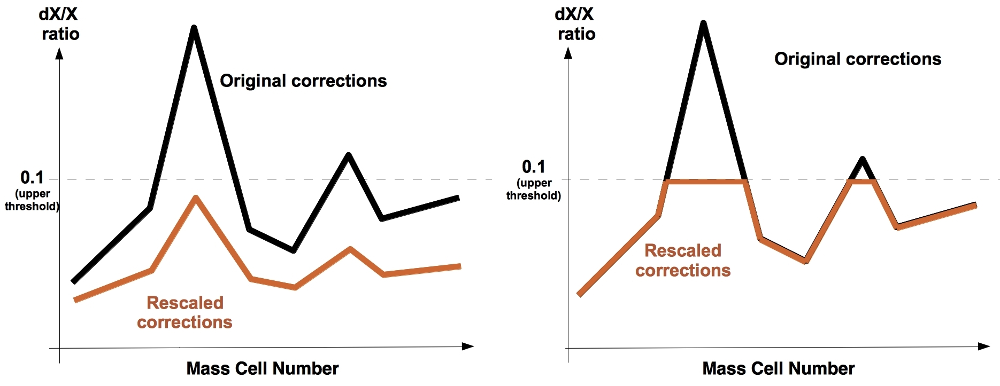

Date & Time: Aug. 5, 2012
Location: home
Computing context: MachoMac
(/Desktop/Research/CppHenyeyCode/src, /Desktop/Research/BodenheimerCode/UnalteredCode)
From last time:
...get very different G values at j=0/1 from the two programs. It looks like those differing G values are what lead to the differences in the B and A matrices ... so I need to look into what's causing the differences.
The lookup tables in the two codes are returning different rho/delta/cP results, which means something about the structure of Helena's look-up tables needs to be tweaked
The secondary vars (rho/kappa/etc) are very slightly different between the two codes, but I don't *think* that's enough to drive the several-orders-of-magnitude G value differences between the two codes.
Actually, it turns out that it is. If the values differ at the fourth or fifth significant figure (which they do), you end up getting G1 = 1e22 instead of 1e19, for example.
Looks like my CDE matrices may still have their indices flipped around, somehow...
After computing HD * InvPeter and HD* InvHelena (in python), I've discovered:
Neither gives a perfect identity matrix
The whole sign errors/differences thing between these two matrices...
When you calculate HDpeter * InvPeter, AND when you do HDHelena * InvHelena, you end up with id matrices that have the wrong (negative) sign on some but not all the rows.
I'm pretty baffled about why and how this is happening.
To do today:
Update the wordpress blog with the last few days' notes.
Continue with the debugging
make sure to undo the matrix multiplication order change and the CDE indices flips from last time (get Helena back to 'normal').
After making that change, I get the following outputs (from Helena):
Corrections at j=0:
5.135e+10 -1.08124e+07 1.60686e+26 1478.01
Values at j=0:
8.75585e+11 7.72108e+08 2.41561e+27 99063.3
Done running the Henyey Matrix inversion subroutine!
P ratio: 0.109117 R ratio: -0.022107 L ratio: 0.0665196 T ratio: 0.019538
Largest dX/X value: 0.109117
Comparing that with the output from Peter's code:
CA (<-- corrections to the variables) at j=1:
1.565e+9 -3.332e+5 -2.40E+027 4.5e+1
Looks like the corrections values are now in better agreement with each other between the two codes, although still not exactly the same.
This must be due to correcting the way I index the CDE matrix values in NewCalcCDEG.cpp
Why wasn't it 'fixed' when I changed the indexing up before, though? Maybe something to do with the matrix multiplication order in modifiedHenyeyMatrixInversion.cpp.
Or it might be due to the correction-rescaling size error that I fixed (had been dividing X/dX, rather than dX/X, to determine the rescaling value).
Will need to figure out exactly why and how this fix happened before letting anyone else depend on this code. Maybe it's just because I'm not sleep deprived while debugging today, but that's not a very reproducible solution.
Let's see what happens when I let Helena run for a few consecutive convergence runs now:
Still doesn't converge, but doesn't crash.
max(dX/X) values swing around wildly. I'd like to plot those as a function of convergence loop number. See if any pattern emerges there
These swings indicate that the Henyey convergence process itself is unstable
Check if Peter's code is rescaling the variable corrections in the same way Helena is.
It looks like my correction rescaling approach differs from his in an important way, as illustrated below.

Methods of rescaling corrections. Helena's method is
on the left. Peter's code's method is on the right. Helena
multiplies all the corrections by the same rescaling factor, such
that the maximum dX/X value is reduced below the threshold. In
other words, all the corrections are scaled homologously, and the
same rescaling factor is applied to all four variables' corrections.
Peter's code, on the other hand, doesn't rescale the corrections
homologously. Rather, his code applies a 'ceiling' to the
corrections. Different variables can have different dX/X ceilings in
his code.
Figure
1:
To make sure that Peter's code is rescaling the corrections this way, I need to:
Uncomment the parts of cdeg_debug.f that rescale the corrections
Run cdeg_debug with inputs/cdeg_debug.start, and capture all of the correction and original values for all 4 dependent variables
In python, plot all dX/X values
On the same plot(s), overlay the SMAX value for each variable as a line. (The SMAX values are specified in the .start file, and are what set the 'upper threshold' for dX/X and correction values in Peter's code.)
If I see 'ceiling'-like behavior in the plots of Peter's code's corrections, then I'll know I've understood his rescaling process correctly.
If that's what he's doing, change Helena to rescale corrections in the same way.
And they see if that gets it to converge.